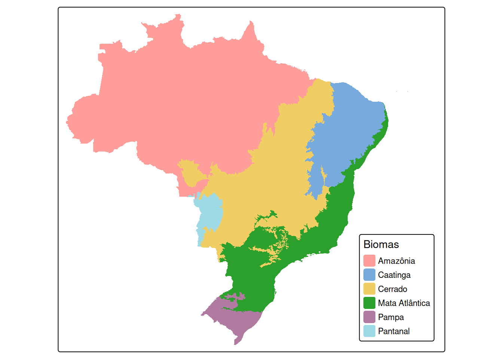
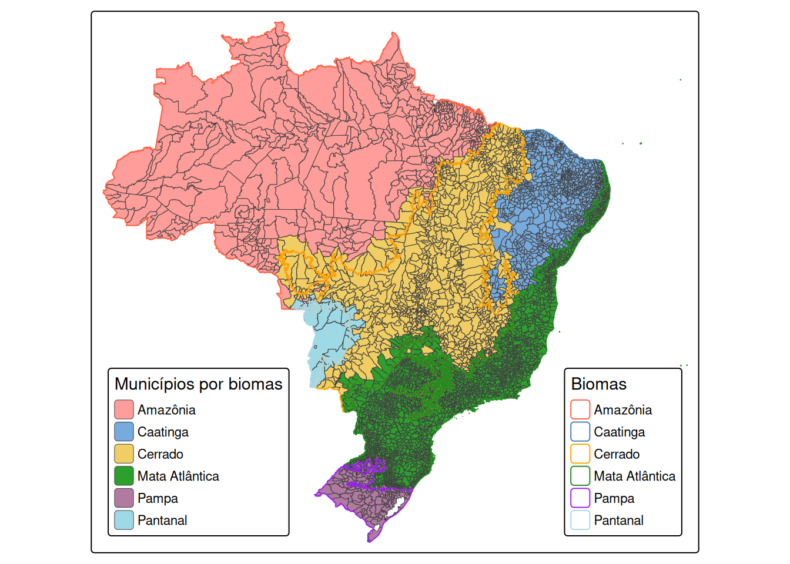
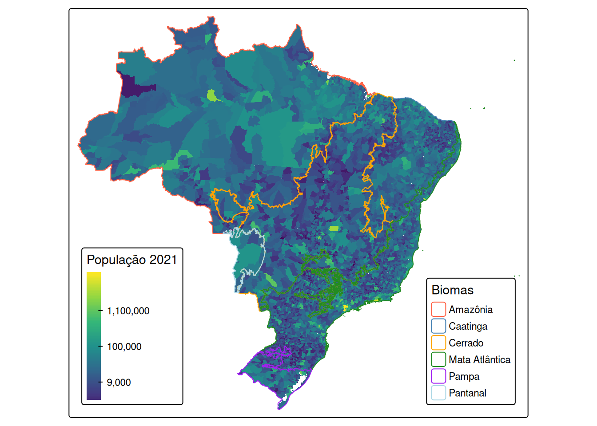

Quantas pessoas vivem de fato na Mata Atlântica?
Cálculo estimado da população brasileira vivendo na Mata Atlântica
Contextualização
Hoje é dia da Mata Atlântica e para comemorar, vou fazer o que mais gosto: uma análise espacial e mapas da Mata Atlântica usando o R.
Vamos confirmar se realmente 70% da população brasileira vive nesse bioma.
Pacotes no R
Preparar o R.
Download dos dados
Limite dos biomas do Brasil, segundo o IBGE para 2019.
# download data -----------------------------------------------------------
## biomas ----
biomas_2019 <- geobr::read_biomes(year = 2019) %>%
dplyr::filter(name_biome != "Sistema Costeiro") %>%
dplyr::mutate(area_biome_km2 = sf::st_area(.)/1e6)
tm_shape(biomas_2019) +
tm_fill(fill = "name_biome",
fill.legend = tm_legend(
title = "Biomas",
position = tm_pos_in("right", "bottom")))
Limite dos municípios do Brasil.
## brasil ----
brasil_mun <- geobr::read_municipality(year = 2021) %>%
dplyr::mutate(code_muni = as.numeric(str_sub(as.character(code_muni), 1, 6)))
tm_shape(brasil_mun) +
tm_polygons()
Dados da população do Brasil.
## populacao brasil
brasil_pop <- brpop::mun_pop_totals(source = "datasus") %>%
dplyr::filter(year == 2021) %>%
dplyr::mutate(year = paste0("pop_", year)) %>%
tidyr::pivot_wider(id_cols = code_muni, names_from = year, values_from = "pop")Junção dos dados
Juntar os dados.
## join ----
brasil_mun_pop <- dplyr::left_join(brasil_mun, brasil_pop)Associar os municípios aos biomas.
## filtrar municipios da mata atlantica ----
brasil_mun_pop_biomas_2019 <- sf::st_join(brasil_mun_pop, biomas_2019)
tm_shape(brasil_mun_pop_biomas_2019) +
tm_polygons(fill = "name_biome",
lwd = .5,
fill.legend = tm_legend(
title = "Municípios por biomas",
position = tm_pos_in("left", "bottom"))) +
tm_shape(biomas_2019) +
tm_borders(col = "name_biome",
col.scale = tm_scale_categorical(
values = c("tomato", "steelblue", "orange", "forestgreen", "purple", "lightblue")),
col.legend = tm_legend(
title = "Biomas",
position = tm_pos_in("right", "bottom")))
População para cada bioma.
tm_shape(brasil_mun_pop_biomas_2019) +
tm_fill(fill = "pop_2021",
fill.scale = tm_scale_continuous_log1p(
values = "viridis"),
fill.legend = tm_legend(
title = "População 2021",
reverse = TRUE,
position = tm_pos_in("left", "bottom"))) +
tm_shape(biomas_2019) +
tm_borders(col = "name_biome",
col.scale = tm_scale_categorical(
values = c("tomato", "steelblue", "orange", "forestgreen", "purple", "lightblue")),
col.legend = tm_legend(
title = "Biomas",
position = tm_pos_in("right", "bottom")))
População nos biomas
Vamos agrupar os valores para os biomas.
## populacao na mata atlantica ----
brasil_mun_pop_dados <- brasil_mun_pop_biomas_2019 %>%
sf::st_drop_geometry() %>%
dplyr::group_by(name_biome) %>%
dplyr::summarise(pop_biome = sum(pop_2021),
muni_n = n(),
area_biome_km2 = round(as.numeric(mean(area_biome_km2)), 2)) %>%
dplyr::mutate(per = round(pop_biome/sum(pop_biome) * 100, 2),
dens = round(pop_biome/area_biome_km2, 2)) %>%
dplyr::relocate(area_biome_km2, .after = 5) %>%
dplyr::relocate(muni_n, .after = 4) %>%
dplyr::rename(Bioma = 1,
`População no bioma` = 2,
`Porcentagem da população no bioma (%)` = 3,
`Número de municípios` = 4,
`Área do bioma (km²)` = 5,
`Densidade populacional no bioma (pop/km²)` = 6) %>%
janitor::adorn_totals("row") %>%
dplyr::mutate(across(last_col(), ~ replace(.x, n(), "-")))
## visualizar a tabela
brasil_mun_pop_dados |>
gt::gt()| Bioma | População no bioma | Porcentagem da população no bioma (%) | Número de municípios | Área do bioma (km²) | Densidade populacional no bioma (pop/km²) |
|---|---|---|---|---|---|
| Amazônia | 24138547 | 9.78 | 559 | 4233598.0 | 5.7 |
| Caatinga | 31580196 | 12.80 | 1208 | 866201.3 | 36.46 |
| Cerrado | 46087889 | 18.68 | 1434 | 1991694.0 | 23.14 |
| Mata Atlântica | 136370198 | 55.27 | 3080 | 1109752.3 | 122.88 |
| Pampa | 7777615 | 3.15 | 233 | 194152.5 | 40.06 |
| Pantanal | 798757 | 0.32 | 22 | 151439.1 | 5.27 |
| Total | 246753202 | 100.00 | 6536 | 8546837.2 | - |
Esta análise mostrou que foi muito abaixo dos 70% amplamente divulgado. Esse valor foi de aproximadamente 55%, mas o valor foi de mais de 136 milhões de pessoas em 3080 municípios com uma densidade de 123 pessoas por km². Variações nos métodos, nos dados e limite do bioma podem fazer esse valor variar.